November 2026 Social Media
Back to the November plan · Calendar
8 posts in November: 4 reels, 3 carousels and 1 Black Friday graphic. That's two posts a week, on Tuesday and Thursday. Every post points to the same story as the website and the email: pain that won't go away, for active people. The two follow-along reels go out the same day their pages go live. Only Dr. Mike and Dr. Kyndra are on camera. Daisy writes, shoots, edits, designs and posts. Dr. Mike approves before anything goes live.
Posting plan
| Date | Post | Type | On camera | Ties to |
|---|---|---|---|---|
| Tue Nov 3 | "What makes you different?" | Reel | Dr. Mike + Dr. Kyndra | Brand intro |
| Thu Nov 5 | Rock, paper, scissors: rest vs. shockwave vs. strength | Carousel | — | Shockwave page |
| Tue Nov 10 | Tennis & golf players: let's fix your elbow | Reel (follow-along) | Dr. Kyndra | Tennis elbow page goes live |
| Thu Nov 12 | Still hurting after the season? | Carousel | — | Email sends the same day |
| Tue Nov 17 | Runners: let's fix your Achilles | Reel (follow-along) | Dr. Kyndra | Achilles page goes live |
| Thu Nov 19 | Spine conditions explained with Oreos | Carousel | — | Back pain / sports injury hub |
| Tue Nov 24 | "Chiro didn't work for you?" | Reel | Dr. Mike | Chiropractic + rehab |
| Fri Nov 27 | Black Friday: gift cards + use your HSA/FSA by Dec 31 | Graphic | — | Year-end offer |
Why this mix: fewer posts you can make well beats ten rushed ones. Two follow-along reels (the @thatchirowithtattoos format) give people a reason to save and share. The carousels need no doctor time.
Banked for December and January (film on Tuesday only if there's time): Things I don't care about as your chiropractor · 4 red flags at a chiropractor · "Have you moved today?" desk check-in · Sleeping positions ranked · 5 things I'd never do to my back · Blind-spot neck drill.
Schedule everything in Meta Business Suite in one sitting once Dr. Mike approves. Post any trend-style reels as Trial Reels from the phone instead, since Business Suite can't.
Shoot day: Tuesday Oct 27, 90 minutes
Must-haves first, so a short shoot still covers November. The bonus block at the end fills December.
| Time | What | Who |
|---|---|---|
| 0:00–0:10 | Set up tripod, light, mic; test one take | Daisy |
| 0:10–0:30 | Follow-alongs: Tennis & golf elbow · Runners Achilles (same seated setup, 3 takes each) | Dr. Kyndra |
| 0:30–0:45 | "Chiro didn't work for you?" | Dr. Mike |
| 0:45–1:00 | "What makes you different?" (Dr. Kyndra plays the patient on the table) | Both |
| 1:00–1:15 | B-roll: shockwave on an elbow and a heel, adjustment, hands-on soft tissue, a training moment, clinic sign and front desk | Both |
| 1:15–1:30 | Bonus for December: Things I don't care about (Dr. Kyndra) · 4 red flags (Dr. Mike) · Sleeping positions (Dr. Kyndra) | Whoever's free |
B-roll feeds the carousels, the shockwave page refresh, and fills gaps in edits.
Bring: phone with a clean lens and free storage, tripod, lav mic, ring light, printed scripts (big font), a chair against a plain clinic wall, a light dumbbell or water bottle, a step or box, a massage ball, a pillow (bonus sleeping reel), Adapt shirts for both doctors.
Film settings: vertical 9:16, 4K 30fps, 3 takes of each hook. Leave 2 seconds of silence at the start and end of every take.
Reel scripts
Each runs 15–40 seconds. Dr. Kyndra checks anything clinical before it posts. Put the title on screen as a white text box for the whole video, like @thatchirowithtattoos does.
1. "What makes you different?" — Dr. Mike + Dr. Kyndra · inspiration
- On screen: Patient: "What makes you different from other chiropractors?"
- Dr. Kyndra (on the table) asks. Dr. Mike doesn't answer out loud. Quick cuts show the answer instead: exam, shockwave, soft tissue work, a strength exercise.
- End on Dr. Mike: "We don't just adjust you and send you out the door."
- Caption CTA: "Text us at (408) 673-2432 to book."
2. Tennis & golf players: let's fix your elbow — Dr. Kyndra · inspiration
- On-screen title: Tennis & Golf Players: Let's Fix Your Elbow
- Hook: "If your elbow still hurts after weeks of rest, do this with me."
- Seated follow-along, about 10 seconds per move: wrist extensor stretch with the arm straight · slow lowering with a light dumbbell or water bottle (3-second count down) · forearm rolling with a massage ball.
- Close: "Still there after 6 weeks? That's where shockwave comes in."
- Caption: links to the new tennis elbow page · text (408) 673-2432.
3. Runners: let's fix your Achilles — Dr. Kyndra · inspiration
- On-screen title: Runners: Let's Fix Your Achilles
- Hook: "Achilles sore every morning? Try this before your next run."
- Follow-along: wall calf stretch, knee straight then bent · slow heel raises off a step, lowering for 3 seconds · ankle circles.
- Close: "If it's still sore after 2 weeks, get it checked."
- Caption: links to the new Achilles page · text (408) 673-2432.
4. "Chiro didn't work for you?" — Dr. Mike · inspiration
- Hook: "Chiropractic didn't work for you? You might have been missing these."
- Beats: a real diagnosis · soft tissue work, not just adjustments · strength training so it doesn't come back · enough visits to finish the job.
- Close: his line, "That's why I do both chiropractic and rehab."
The bonus-block scripts (Things I don't care about, 4 red flags, sleeping positions, desk check-in, 5 things I'd never do, neck drill) are in the Oct 26 version of this page. They're the same as before, just moved to December.
Carousels and graphic
Daisy designs them at 1080x1440 in Figma with the Post Footer, brand green #019877. B-roll stills from Tuesday can go behind the text.
| Post | Slides | Inspired by |
|---|---|---|
| Rock, paper, scissors: rest vs. shockwave vs. strength | 1: hand-game cover · 2: Rest: fine for 2 weeks, then it stops working · 3: Shockwave: wakes up stuck tendons (elbow, heel, Achilles) · 4: Strength: keeps it from coming back · 5: "Best combo? All three." + text to book | @thephysiofix |
| Still hurting after the season? | Sell the moment, not the treatment. 1: "Still hurting after the season?" · 2: "Your rec league ended in October. Your knee didn't get the memo." · 3: "You skipped the Turkey Trot because of your heel." · 4: "You can't swing a club without thinking about your elbow." · 5: "Ski trip in January and your back already hurts." · 6: What we do: adjustments, soft tissue, shockwave, strength · 7: Text (408) 673-2432 | @dariamedric (see idea bank) |
| Spine conditions explained with Oreos | Healthy stack · bulging disc · herniated disc · kyphosis · scoliosis · "Which one sounds like you?" + text to book. Shoot real Oreo stacks on a phone at home, no doctor needed | @drwajeehapt · spine terms |
| Black Friday (Nov 27) | Single graphic: gift cards, $100 or any amount · "Got HSA/FSA dollars left? Use them before Dec 31" | November plan |
"5 pains rest won't fix" is folded into the season carousel. Dr. Kyndra checks the wording on the shockwave and Oreo slides before they're scheduled.
Hooks to steal
From @therealbrianmark's hook list, rewritten for Adapt. Swap these into captions or the first second of any reel.
| Type | Hook |
|---|---|
| Curiosity | "No one talks about this, but your elbow pain probably isn't from tennis." · "Here's what actually happens when you rest an injury for 6 weeks." |
| Contrarian | "The biggest lie you've been told about rest." · "Everyone gets this wrong about stretching." |
| Experience | "I used to think adjustments fixed everything, but…" · "If I could give one piece of advice to every runner…" |
| Call-out | "Stop scrolling if you've had back pain for more than 2 weeks." · "You're probably doing this at your desk without realizing." |
Inspiration links (November posts)
| Our post | Inspired by |
|---|---|
| "What makes you different?" (reel) | @occhiropractor |
| Elbow + Achilles follow-alongs (reels) | @thatchirowithtattoos reels · shoulder follow-along |
| "Chiro didn't work for you?" (reel) | @livingrootedchiro |
| Rock, paper, scissors (carousel) | @thephysiofix |
| Still hurting after the season? (carousel) | @dariamedric — post 1 · post 2 · post 3 |
| Spine conditions with Oreos (carousel) | @drwajeehapt — part 1 · spine terms |
| Banked reels | @drmollypluss · @dr.jessbrubaker · @alexathechiro · @completewellness_nyc · @thecontentdoctors · @christinemarie.fit |
Idea bank
Ideas saved while scrolling, for us to recreate or learn from in later months. Click a screenshot to see it full size. Add new screenshots to the inspo folder and a row here.
| Idea | How Adapt could use it | Format | Source | Screenshot |
|---|---|---|---|---|
| "[Job or sport]: let's fix your [body part]" series | A recurring weekly follow-along: Golfers: low back · Lifters: shoulders · Cyclists: hips · Desk workers: neck · Pregnant mamas: hips (Dr. Kyndra, prenatal). One chair, one wall, easy to batch. His pinned ones hit 193K–711K views | Reel series | @thatchirowithtattoos | 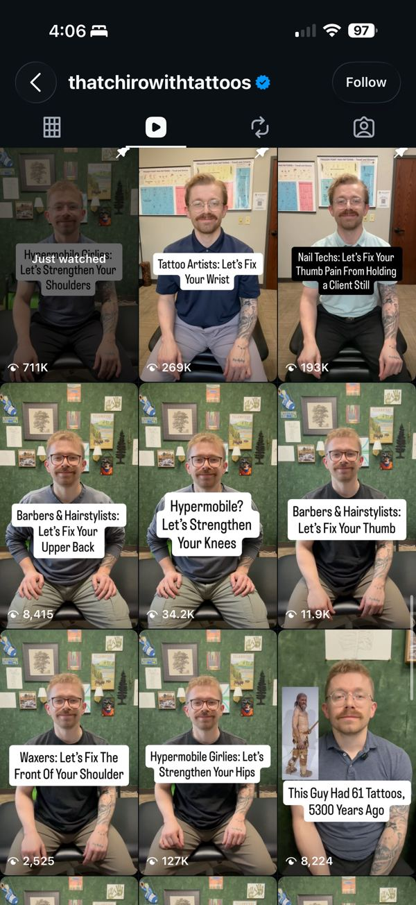 |
| Oreo spine, part 2 | Spondylolisthesis, ankylosing spondylitis, degenerative disc, pinched nerve | Carousel | @drwajeehapt | 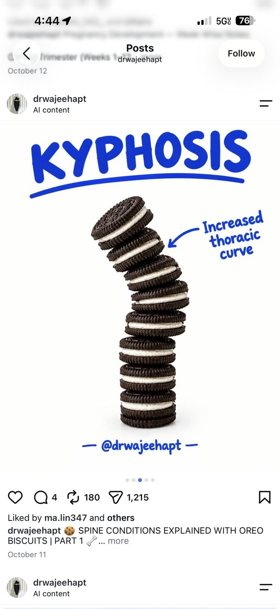 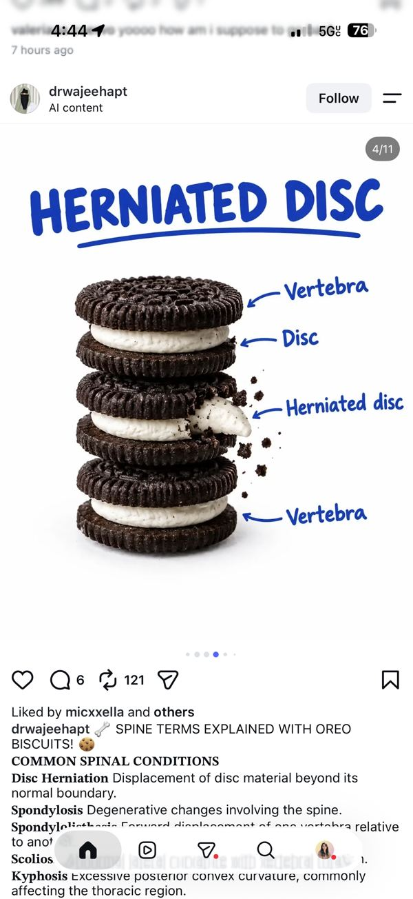 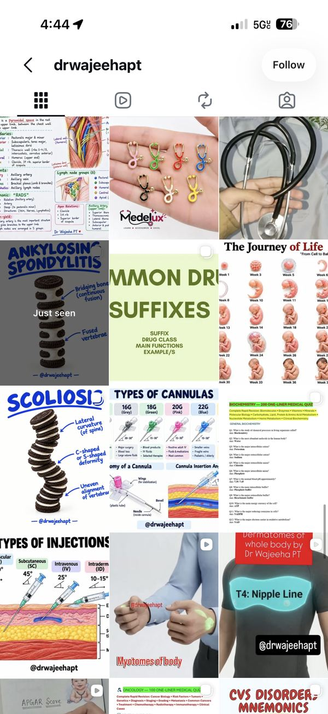 |
| Sell the moment, not the treatment | Life-event series: "Half marathon in 12 weeks? When to get that knee checked" · "Before your ski trip" · "Pregnancy timeline: when prenatal chiro helps" · "The thing patients wish they'd done earlier" | Carousel series | @dariamedric | 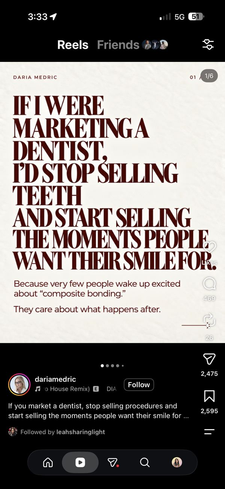 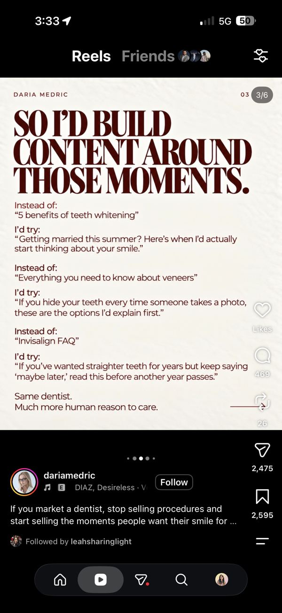 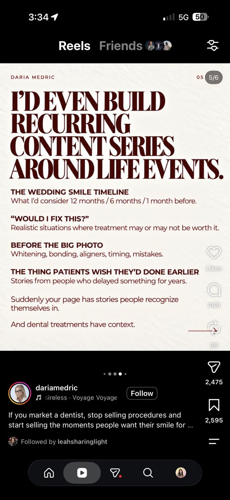 |
| Calm "exercise without flaring" follow-along | Eli or Dr. Paris in the rehab area, soft light, a big serif text overlay: "Welcome to the side of the internet where we get you back to your sport without flaring up" | Reel | @thenervoussystem.ot | 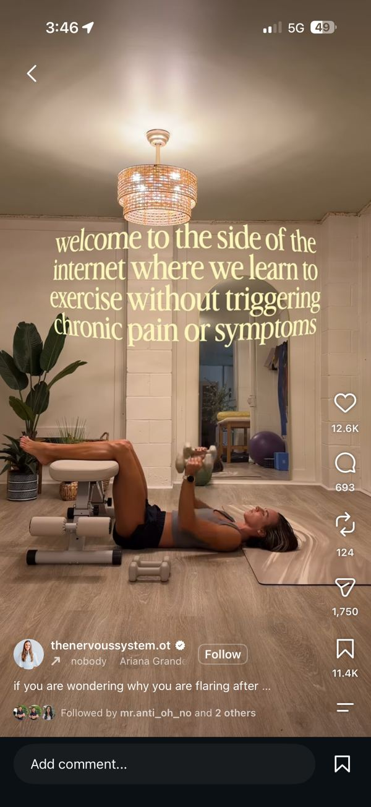 |
| Hook list | See "Hooks to steal" above. Pull one hook for every reel | Reference | @therealbrianmark | 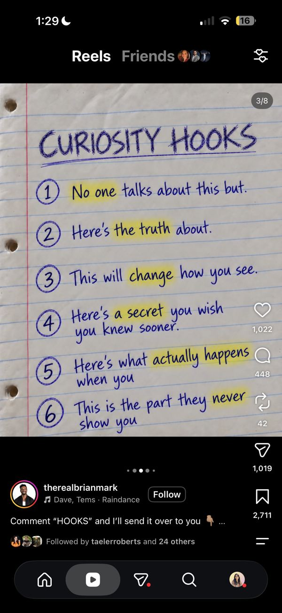 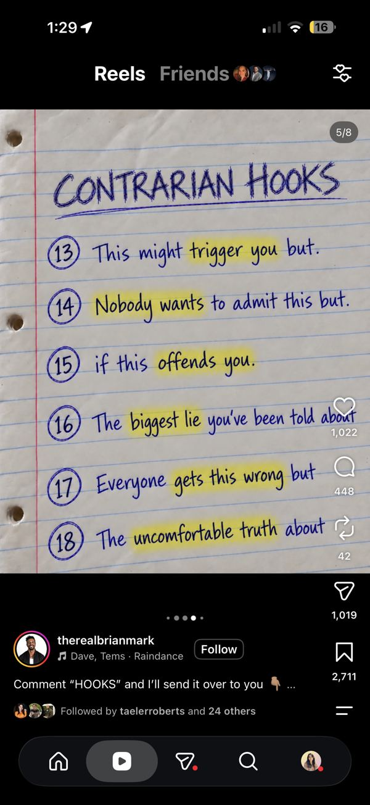 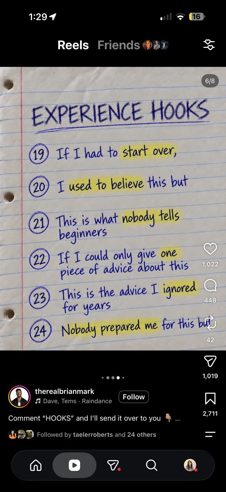 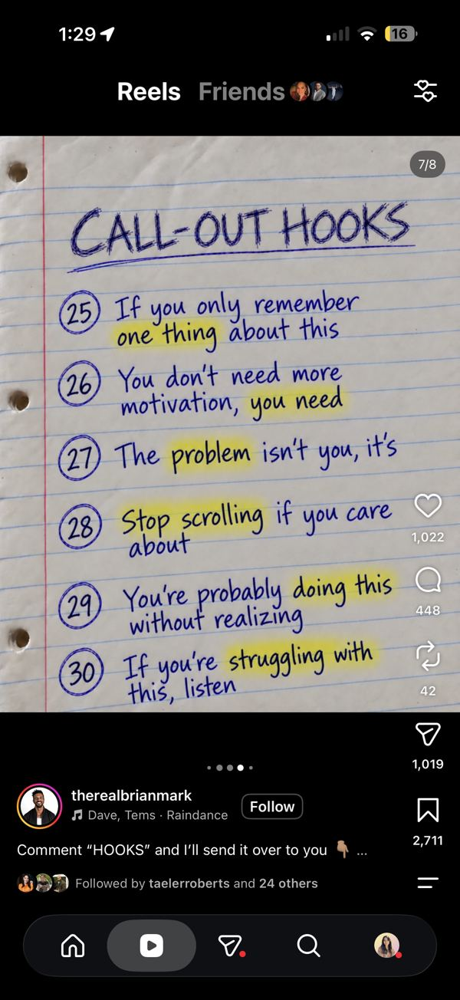 |
| 6 types of educational posts | A monthly mix checklist: common mistake · myth vs. fact · step-by-step · framework · quick tips · do's & don'ts. November covers 4 of 6 | Reference | @personalbrandlaunch | 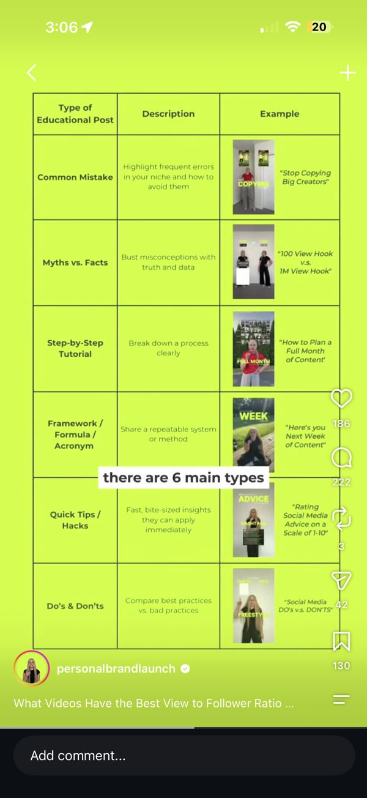 |


Saved for later months (need Eli, Nathalia, Dr. Paris or the full team): @occhiropractor posture POV · @movement.chiropractic "unpopular things" · @medispine.ca team trend · @balancedbodyjm massage POV · @lonestarsportsrehab.btx massage humor · @cassiethechiro · @atlanta_spine · @alexathechiro movement break · @dr.suzischulman